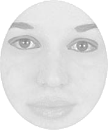
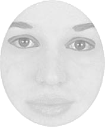

Stanford Department of Psychology
In this experiment, you will see faces displayed on the screen. Every time two faces will simultaneously appear left and right to the center cross very briefly. Maintain your gaze on the fixation cross in the center throughout the experiment and report the relative vertical position of the face that appeared to have higher contrast around the eye region after the two faces disappear. Press {{}} arrow key if the face which had higher contrast was shifted upward and {{}} arrow key if the face which had higher contrast was shifted downward. Ignore block dots appearing before the face onset.
Legal information: By answering the following questions, you are participating in a study being performed by cognitive scientists in the Stanford Department of Psychology. If you have questions about this research, please contact Minyoung Lee at minyoung.lee@stanford.edu. You must be at least 18 years old to participate. Your participation in this research is voluntary. You may decline to answer any or all of the following questions. You may decline further participation, at any time, without adverse consequences. Your anonymity is assured; the researchers who have requested your participation will not receive any personal information about you.


 
